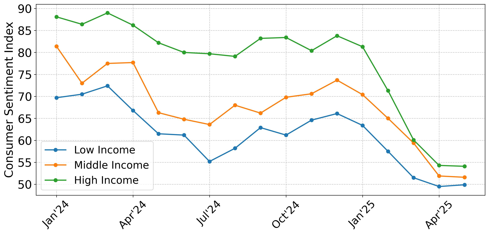
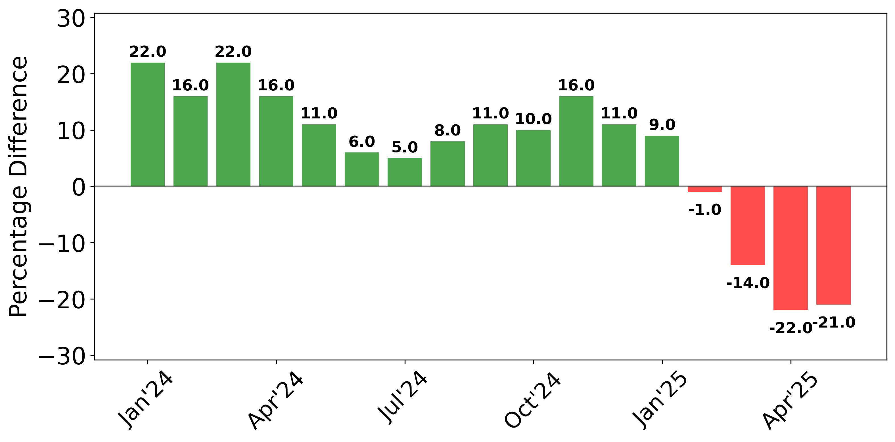
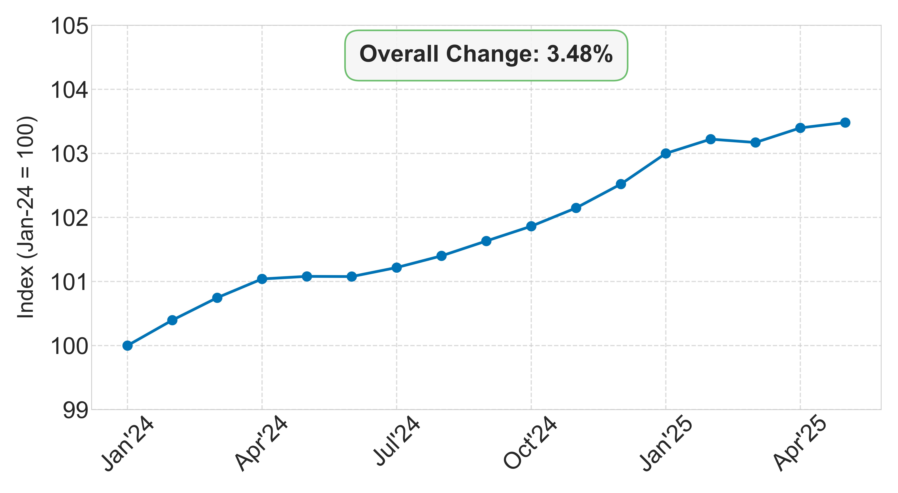
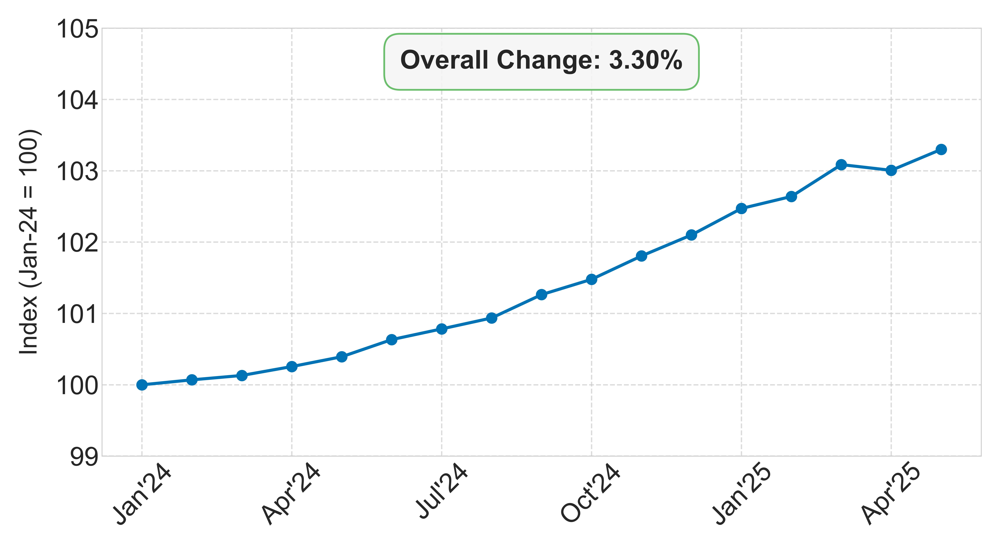

How the US Economy is doing, illustrated with simple graphs
Consumer confidence

Source: University of Michigan Survey of Consumers. Data series: Index of Consumer Sentiment Within Income Terciles. Link to data page.
Net economic sentiment

Source: University of Michigan Survey of Consumers. Data series: []. Net economic sentiment is calculated as the difference between percent favorable and percent unfavorable. Link to data page.
Unemployment rate
Source: Bureau of Labor Statistics. Data series is adjusted for seasonality. Link to data page.
Consumer Price Index: All

Source: Bureau of Labor Statistics. Data series is adjusted for seasonality. Link to data page.
Consumer Price Index: Housing
Source: Bureau of Labor Statistics. Data series is adjusted for seasonality. Link to data page.
Consumer Price Index: Food

Source: Bureau of Labor Statistics. Data series is adjusted for seasonality. Link to data page.